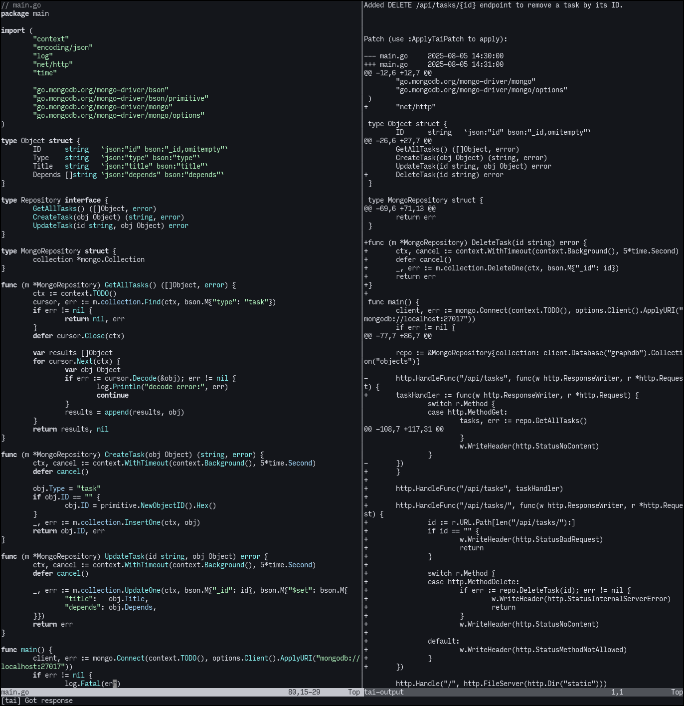
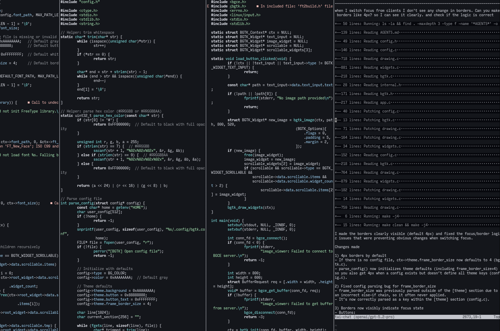

<!DOCTYPE html>
<meta name="viewport" content="width=device-width, initial-scale=1">
<title>tai.nvim + tai</title>
<meta charset="UTF-8">
<meta name="color-scheme" content="light dark">
<link rel=icon href=data:,>
<link rel=alternate type="application/rss+xml" title=log href=feed.xml />
<style>pre{width:56ch;margin:2ch auto}a{color:#ff00ff}img{max-width:100%}</style>
<pre>
<h1>泰</h1>
<i><b>tai.nvim</b></i>


<a href=log.html>log</a> | <a href=tree.html>tree</a> | <a href=refs.html>refs</a>
<!-- site nav -->

a minimal, dependency-free Neovim plugin that brings
AI coding agents directly to your editor.

<a href="https://dotfyle.com/plugins/blmayer/tai">

</a>

<b>features</b>

- subtask harness: main agent can implement or
  spawn children with clean history; only the
  final report (+ notes/todos) returns.
- live context: per-agent notes + todos injected
  into the system prompt every turn (not history).
- flexible subtasks: goal, tools, optional
  system_prompt and notes/todos seed.
- session persistence: auto-save/restore.
- file read/write, shell, image analysis.
- rate limiting (rpm/tpm).
- streaming and non-streaming modes.
- code folding (including whole subtasks).
- provider-side tool pass-through.
- configurable shell command safety allowlist.


<b>harness</b>

  MAIN (edit/write + subtask)
    │
    ├── subtask(goal, tools, system_prompt?)
    │      {{{ fold, own history + notes
    │      final text reply
    │   ◄── summary + notes + todos
    │
    └── verify → answer user


<subtask params>

- goal           required charter for the child
- tools          required tool allowlist
- system_prompt  optional persona/constraints
- notes, todos   optional seed memory


<i>providers</i>

- gemini         GEMINI_API_KEY
- groq           GROQ_API_KEY
- minimax        MINIMAX_API_KEY
- mistral        MISTRAL_API_KEY
- ollama         (local, localhost:11434)
- llama.cpp      (local, localhost:8080)
- openai         OPENAI_API_KEY
- openai resp.   OPENAI_API_KEY (Responses API)
- openrouter     OPENROUTER_API_KEY
- stepfun        STEPFUN_API_KEY
- xai            XAI_API_KEY
- z.ai           Z_AI_API_KEY
- zyphra         ZYPHRA_API_KEY
- custom         (set options.url)


<b>agent tools</b>

- read       read files (with line ranges)
- shell      run commands in the project root
- edit       search-and-replace (multi flag)
- write      create new files
- send_image send images for visual analysis
- subtask    spawn child agent (goal + tools)
- todos      add/update todos (auto-injected)
- notes      write/append notes (auto-injected)


<b>keybindings</b>

&lt;leader&gt;tt  - open tai chat
&lt;leader&gt;tc  - reload config
&lt;leader&gt;tr  - clear history
&lt;leader&gt;ts  - stop
&lt;C-W&gt;&lt;C-T&gt; - toggle chat window


<b>installation</b>

clone or place <i>lua/tai/</i> into your Neovim config dir
<i>~/.config/nvim/lua/</i> and add keymaps to <i>init.lua</i>.
For :Tai commands, also install <i>plugin/tai.lua</i>.

  local tai = require("tai")
  tai.setup({})

  vim.keymap.set("n", "&lt;leader&gt;tt", tai.chat)
  vim.keymap.set("n", "&lt;leader&gt;tc", tai.reload)
  vim.keymap.set("n", "&lt;leader&gt;tr", tai.clear_history)
  vim.keymap.set("n", "&lt;leader&gt;ts", tai.stop)
  vim.keymap.set("n", "&lt;C-W&gt;&lt;C-T&gt;",
    tai.toggle_chat_window)

requires Neovim 0.10+, a project <i>.tai</i> file, and
an API key. or use lazy.nvim / packer / vim-plug.


<b>configuring</b>

tai reads configuration from a <i>.tai</i> JSON file
in your project root:

- <i>provider</i>: provider name (see list above)
- <i>model</i>: model identifier
- <i>options</i>: provider-specific options passed
  to the API (temperature, max_tokens, etc.)
- <i>stream</i>: enable streaming (default false)
- <i>use_tools</i>: enable agent tools (default true)
- <i>think</i>: reasoning effort for supporting models
- <i>rpm</i>: max requests per minute (default 60)
- <i>tpm</i>: max tokens per minute
- <i>provider_tools</i>: provider-side tools array
  (e.g., ["web_search"] for OpenAI)
- <i>system_prompt</i>: override main system prompt
- <i>custom_prompt</i>: append to main system prompt
- <i>auto_approve</i>: auto-approve unsafe shell cmds
- <i>allowed_commands</i>: override allowed shell
  commands (default: cat, grep, ag, rg, ls, head,
  tail, wc, diff, sort, uniq, find, file, stat,
  date, echo, tree, pwd, which, type)

example .tai file:

{
  "provider": "groq",
  "model": "llama-3.1-70b-versatile",
  "stream": true,
  "rpm": 30,
  "options": {
    "temperature": 0.7,
    "max_tokens": 4096
  },
  "use_tools": true,
  "allowed_commands": {
    "git": true,
    "npm": true,
    "make": true
  }
}


<b>screenshots</b>

</img>
</img>
</img>

</pre>

